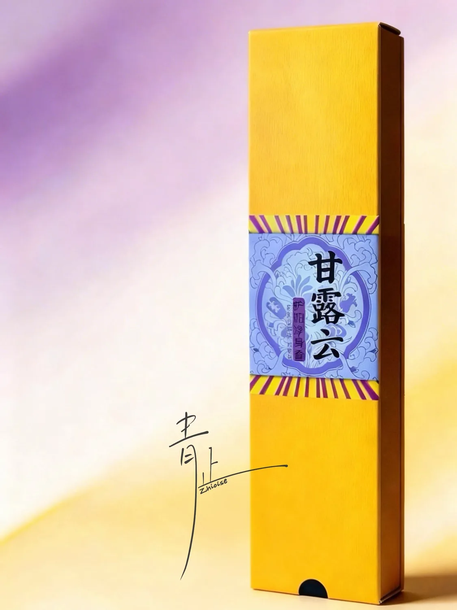
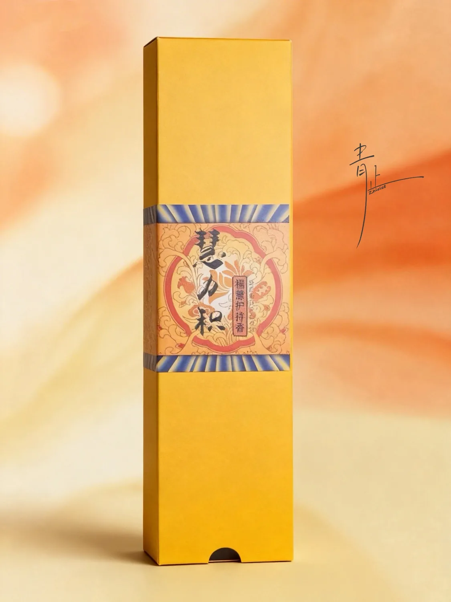

Sandalwood, frankincense, myrrh and gentle herbs—warm, resinous and softly grounding.
View Details

Zhioise centers on traditional stick incense and fragrant adornments, with a small selection of Chinese tea offered by inquiry. The collection grows slowly, while the visual and ritual language remains steady.

Sandalwood, frankincense, myrrh and gentle herbs—warm, resinous and softly grounding.
View Details
Clear and warm, subtle yet enduring—made with sandalwood, agarwood, borneol and Tibetan cypress.
View Details Inquiry
InquirySandalwood, elemi resin, rose, magnolia and clove—floral, honeyed and radiant.
View DetailsThe website presents the experiences that are possible rather than publishing weekly or monthly schedules. Dates, group size and format are arranged through inquiry.

Stillness begins as the smoke rises.
Zhioise is not the assertion of one person, nor the display of one self. It begins with a quiet intention: through incense, tea and everyday objects, to soften restlessness, settle worldly noise, and let ordinary days hold stillness, elegance, beauty and a glimmer of wisdom.
Read About Zhioise